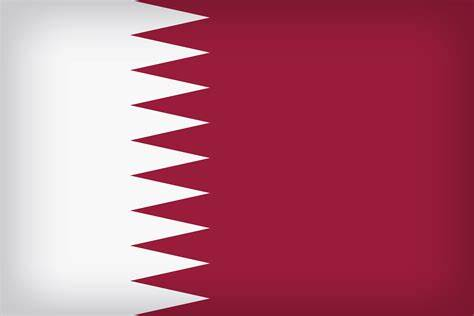
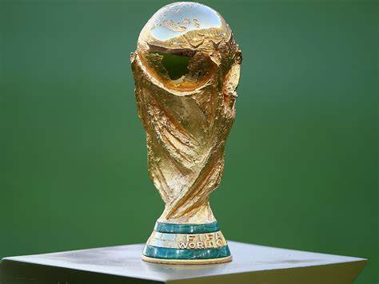
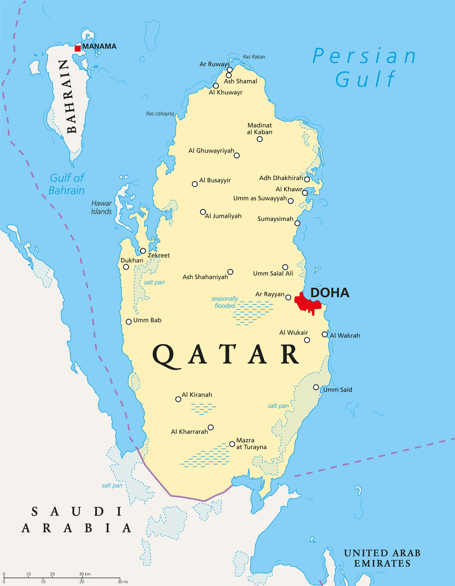

Copa do Mundo Qatar 2022
História da Copa
A Copa do Mundo é um evento esportivo realizado a cada quatro anos no qual as seleções classificadas disputam o título de melhor seleção de futebol do mundo. Trata-se do maior evento futebolístico do planeta e conta com uma audiência de bilhões de pessoas
A história da Copa do Mundo de Futebol da FIFA se iniciou em 1930, durante um congresso da entidade, quando Jules Rimet conseguiu a aprovação para criar um torneio internacional. A primeira competição ocorreu em 1930, tendo a participação de 13 equipes convidadas, tendo o Uruguai como país-sede e como campeão.
A Fifa surgiu no começo do século XX, em 1904, e contava com as seguintes nações: Bélgica, Dinamarca, França, Holanda, Espanha, Suécia e Suíça. Os primeiros esforços para que houvesse uma edição da Copa do Mundo foram realizados por um holandês chamado Carl Anton Wilhelm Hirschman. No entanto, o grande responsável por conseguir viabilizar a realização da Copa foi o francês Jules Rimet, presidente da Fifa durante mais de 30 anos.
Com o passar do tempo, a competição foi ganhando importância e isso se refletiu diretamente na quantidade de nações participantes. Dos 13 iniciais, a competição contou com 16 em 1934, 15 em 1938 e 13 em 1950; de 1954 a 1978, a competição contou com 16 participantes; de 1982 a 1994, 24 seleções. A partir de 1998, iniciou-se o modelo com 32 seleções. Esse modelo será usado até 2022, pois, de 2026 em diante, a Copa será organizada com 48 seleções.

História do Qatar
Catar, ou Qatar, é um país localizado na Ásia Ocidental, na Península Arábica (península é uma extensão de terra cercada por água em quase todos os lados), e estende-se até o norte do Golfo Pérsico. O PIB do país em 2017 chegou a U$ 167,6 bilhões, sendo assim uma das nações mais ricas do mundo.
O Catar corresponde a uma Monarquia Absolutista e Constitucional, concomitantemente. A dinastia reinante no país encontra-se no poder desde 1825. Em 1871, o país pertencia ao domínio otomano, em razão de questões políticas e militares. Ao perder as batalhas ocorridas na Primeira Guerra Mundial, estabeleceu-se uma desordem no Império Otomano, diminuindo, então, seu domínio sobre a região do Catar.
O país participou da Revolta Árabe contra os otomanos, saindo bem-sucedidos e diminuindo ainda mais o domínio estabelecido pelos otomanos. Então a família al-Thani ganhou o direito de governar o Catar, porém, o país só conquistou sua independência em relação ao Reino Unido, em 1971, tornando-se, assim, um Estado Soberano.
Localização
Por se localizar na Península Arábica, em uma região de planície árida basicamente coberta por areia e pouquíssima vegetação nativa, o Catar é uma região de clima desértico com altíssimas temperaturas que variam ao longo do ano entre 14ºC e 45ºC. Possui um verão longo que perdura entre os meses de maio e setembro com temperatura média de 38º.

População
A população do Catar é de aproximadamente 2.743.901 habitantes. Do total, cerca de 75% são estrangeiros, representados especialmente pelos indianos. No país, há também comunidades nepalenses, filipinas, paquistanesas e de outras nacionalidades menos representativas. Cerca de 800 brasileiros vivem, atualmente, no Catar. Em 2013, apenas um pouco mais de 280 mil pessoas eram cidadãs do país. O governo faz previsões de que em 2020 o país alcance uma marca de 2,8 milhões de habitantes.
Curiosidades
1. Primeira copa do oriente médio
Nunca na história, a competição mais importante do futebol foi disputada na região do oriente médio.
essa será uma copa muito simbólica para o país.
2. Cidade de Lusail
Lusail, no Catar, foi construída do zero no meio do deserto. Com 38 km de extensão ez investimento de
45 bilhões de dólares, a cidade é considera uma das mais luxuosas do planeta, localizada a 15 km da capital Doha.
O estádio em Lusail tem capacidade para 80 mil pessoas e será o maior da Copa do Mundo de 2022.
Sendo assim, ele será palco da abertura e da final da competição. Outros sete jogos acontecerão na arena.
3. Estádio sustentável
A Copa do Mundo da FIFA terá o primeiro estádio desmontável da história. O estádio Ras Abu Aboud é sustentável e foi construído com containers navais reciclados.

4. O Catar tem pouca tradição no futebol
Diferente das Copas do Mundo anteriores, o evento foi distribuído para um país sem tradição no futebol. Essa será sua primeira participação na competição garantida pelo fato de sediar os jogos.
Embora isso destoe da tradição da Federação Internacional de Futebol, o Catar pretende dar um salto de qualidade no esporte e fazer o caminho contrário: chamar a atenção e se gabaritar como um polo futebolístico.
5. Horário dos jogos do Brasil
A seleção brasileira fará sua estreia na Copa do Mundo 2022 no dia 24 de novembro, contra a Sérvia. Neste dia, que cairá numa quinta-feira, o Brasil jogará às 16h. Já o segundo jogo será contra a Suíça, numa segunda-feira, 28 de novembro, às 10h.
| jogos brasil fase 1 | ||
|---|---|---|
| Data | Brasil Vs | Hórario |
| 24/11 | Sérvia | 16h |
| 28/11 | Suíça | 10h |
Principais atividades economicas
A economia baseia-se, especialmente, na exportação de petróleo e gás natural, que juntos representam em torno de 50% do Produto Interno Bruto do país. De acordo com o Observatório da Complexidade Econômica, o Catar possui uma balança comercial positiva com saldo de US$30,7 bilhões.O Catar tem agora como objetivo diversificar a economia e modernizar o país. A Autoridade de Investimento do Catar é o principal órgão do governo catari para alcançar esses objetivos. O país é o 14º no ranking de competitividade do Fórum Econômico Mundial.